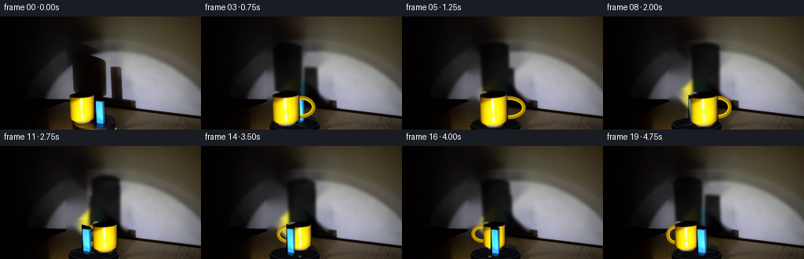
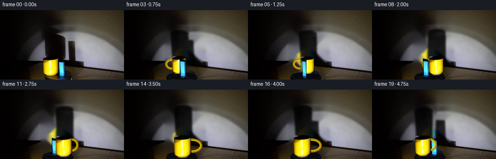
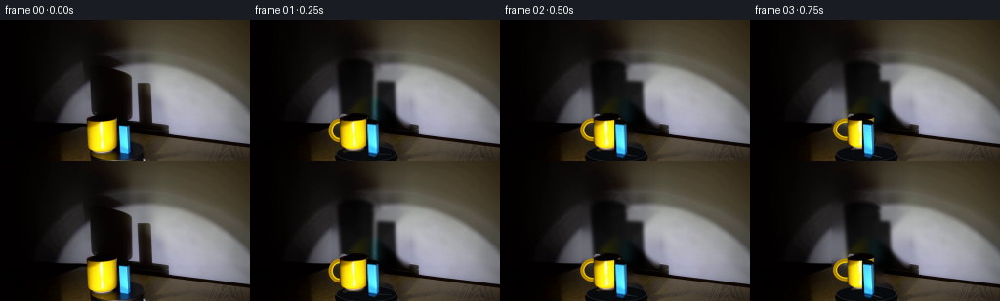
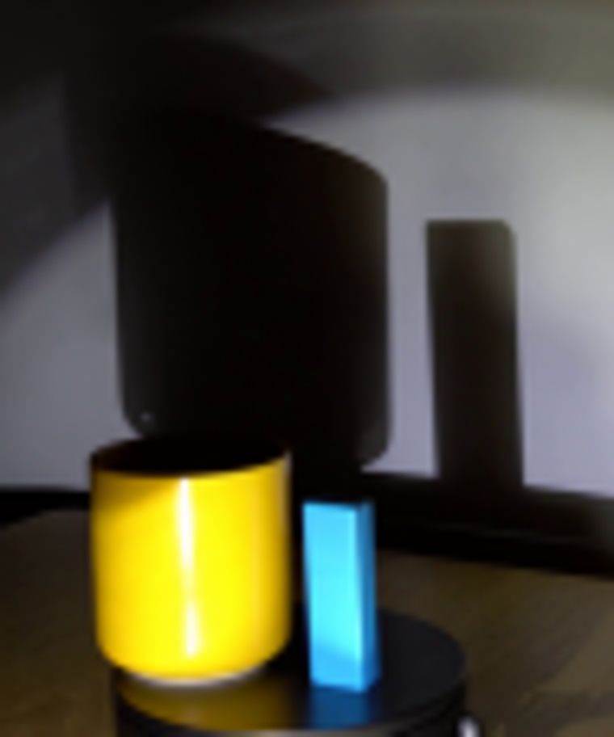
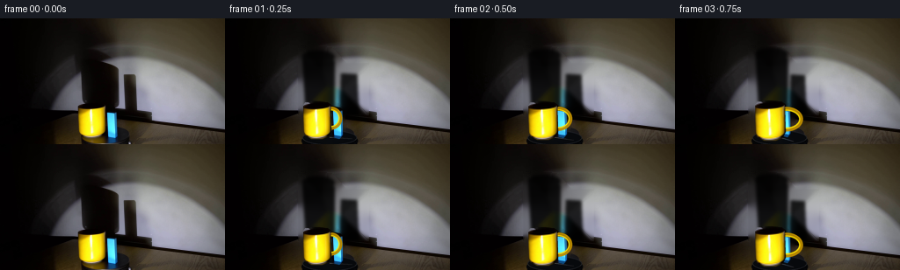

CODING AGENTS AS PIXEL WORLD MODELS
traex/GPT-5.6-Sol · 0081
点击播放 · 原生 RGB 像素
逐轮保存的候选
回放视频、检查图与代码变化。
每份候选均可单独播放。实际图片检查记录在下方工具轨迹中。
候选 01播放与检查图
点击播放 · 原生 RGB 像素

展开代码变化
--- 上一保存版本
+++ 本次保存版本
@@ -0,0 +1,162 @@
+from pathlib import Path
+import math
+import numpy as np
+import cv2
+from PIL import Image, ImageDraw, ImageFilter
+import artifact_io
+
+CASE = Path(__file__).resolve().parent
+W,H = 256,144
+orig = np.array(Image.open(CASE/'first_frame.png').convert('RGB'), dtype=np.uint8)
+
+# Build a clean locked-off plate. The masks cover the two cast shadows and
+# the objects themselves; OpenCV's inpaint retains the photographed texture.
+bgr = cv2.cvtColor(orig, cv2.COLOR_RGB2BGR)
+wall_mask = np.zeros((H,W), np.uint8)
+# shadow of mug, including its soft upper-left penumbra
+cv2.fillPoly(wall_mask, [np.array([(84,31),(120,34),(140,55),(140,109),(84,109)],np.int32)], 255)
+# shadow of blue block
+cv2.rectangle(wall_mask,(134,52),(162,112),255,-1)
+# Do not alter the table in this pass
+wall_mask[110:,:] = 0
+wall_mask = cv2.GaussianBlur(wall_mask,(5,5),0)
+wall_mask = (wall_mask>20).astype(np.uint8)*255
+clean = cv2.inpaint(bgr,wall_mask,7,cv2.INPAINT_TELEA)
+
+# Remove the photographed mug and block from the foreground plate.
+fgmask=np.zeros((H,W),np.uint8)
+cv2.fillPoly(fgmask,[np.array([(86,93),(122,93),(136,101),(137,141),(86,143)],np.int32)],255)
+clean=cv2.inpaint(clean,fgmask,5,cv2.INPAINT_TELEA)
+base=cv2.cvtColor(clean,cv2.COLOR_BGR2RGB)
+
+# Restore a clean, low-profile black turntable where the inpainting crossed it.
+# Rendered softly at 3x for the same slightly defocused photographic character.
+def draw_platform(arr, angle):
+ S=3
+ lay=Image.new('RGBA',(W*S,H*S),(0,0,0,0)); d=ImageDraw.Draw(lay,'RGBA')
+ # front wall then top lip
+ d.ellipse((87*S,129*S,151*S,151*S), fill=(4,5,7,245))
+ d.rectangle((88*S,138*S,150*S,144*S), fill=(3,4,6,248))
+ d.ellipse((88*S,128*S,150*S,145*S), fill=(7,9,12,250), outline=(29,31,36,210), width=1*S)
+ # A very restrained rotating reflection on the glossy top.
+ a=angle
+ cx,cy=119*S,136*S
+ rr=27*S
+ x2=cx+math.cos(a)*rr; y2=cy+math.sin(a)*6*S
+ d.line((cx,cy,x2,y2), fill=(62,66,72,65), width=1*S)
+ # rotating warm glint opposite the cool one
+ x3=cx-math.cos(a)*23*S; y3=cy-math.sin(a)*5*S
+ d.ellipse((x3-2*S,y3-S,x3+2*S,y3+S),fill=(110,79,15,35))
+ lay=lay.resize((W,H),Image.Resampling.LANCZOS)
+ out=Image.alpha_composite(Image.fromarray(arr).convert('RGBA'),lay)
+ return np.array(out.convert('RGB'))
+
+# Extract photographed sprites with hand-traced antialiased alpha silhouettes.
+def sprite_crop(box, poly, ellipses=()):
+ x0,y0,x1,y1=box
+ crop=Image.fromarray(orig[y0:y1,x0:x1]).convert('RGBA')
+ s=4
+ m=Image.new('L',((x1-x0)*s,(y1-y0)*s),0); md=ImageDraw.Draw(m)
+ p=[((x-x0)*s,(y-y0)*s) for x,y in poly]
+ md.polygon(p,fill=255)
+ for e in ellipses:
+ md.ellipse(tuple((v-(x0 if i%2==0 else y0))*s for i,v in enumerate(e)),fill=255)
+ m=m.resize((x1-x0,y1-y0),Image.Resampling.LANCZOS)
+ crop.putalpha(m)
+ return crop
+
+mug = sprite_crop((86,94,123,140),
+ [(89,99),(91,96),(117,96),(120,99),(121,128),(118,134),(111,137),(98,137),(91,133),(89,128)],
+ [(89,95,121,105)])
+block = sprite_crop((118,100,136,142),
+ [(121,102),(130,104),(133,106),(133,136),(129,140),(121,138)])
+
+# Place a sprite by its bottom-center contact point, with optional x compression.
+def paste_sprite(canvas, spr, contact, scale=1.0, xfactor=1.0):
+ w,h=spr.size
+ nw=max(1,round(w*scale*xfactor)); nh=max(1,round(h*scale))
+ rs=spr.resize((nw,nh),Image.Resampling.LANCZOS)
+ x=round(contact[0]-nw/2); y=round(contact[1]-nh+2)
+ canvas.alpha_composite(rs,(x,y))
+
+# A handle, behind the mug body. It is almost edge-on at t=0, then becomes
+# visible on alternating sides as the mug's orientation follows the platform.
+def draw_handle(layer, mx,my,theta,scale):
+ visibility=abs(math.sin(theta))
+ if visibility < .10: return
+ side=1 if math.sin(theta)>0 else -1
+ ext=(3+8*visibility)*scale
+ s=4
+ tmp=Image.new('RGBA',(W*s,H*s),(0,0,0,0)); dr=ImageDraw.Draw(tmp,'RGBA')
+ cx=(mx+side*(14+ext*.30)*scale)*s
+ cy=(my-24*scale)*s
+ rw=(7+ext)*scale*s; rh=13*scale*s
+ box=(cx-rw,cy-rh,cx+rw,cy+rh)
+ # dark gold outer rim and illuminated inner-facing edge
+ dr.ellipse(box,outline=(188,140,0,240),width=max(2,round(4*scale*s)))
+ ib=(box[0]+3*s,box[1]+3*s,box[2]-3*s,box[3]-3*s)
+ dr.ellipse(ib,outline=(255,221,0,225),width=max(1,round(1.5*scale*s)))
+ tmp=tmp.resize((W,H),Image.Resampling.LANCZOS)
+ layer.alpha_composite(tmp)
+
+# Soft cast shadows on the wall. Their footprints move with the two objects,
+# while the spotlight itself stays locked in place.
+def add_shadows(arr, mug_contact, block_contact, theta, mz, bz):
+ S=3
+ sh=Image.new('RGBA',(W*S,H*S),(0,0,0,0)); d=ImageDraw.Draw(sh,'RGBA')
+ mx=mug_contact[0]; bx=block_contact[0]
+ # Perspective projection: farther items make fractionally larger/higher shadows.
+ mt=42-0.35*mz
+ # broad cylindrical mug silhouette, slightly skewed by low light
+ mp=[((mx-13)*S,110*S),((mx-17)*S,mt*S),((mx-10)*S,(mt-4)*S),
+ ((mx+20)*S,(mt+7)*S),((mx+20)*S,110*S)]
+ d.polygon(mp,fill=(0,0,0,218))
+ d.ellipse(((mx-17)*S,(mt-5)*S,(mx+20)*S,(mt+10)*S),fill=(0,0,0,205))
+ # block's clean tall shadow, displaced to the right by the low spotlight
+ bt=63-0.22*bz
+ shift=13
+ bw=7+3*abs(math.cos(theta))
+ d.polygon([((bx+shift-bw)*S,110*S),((bx+shift-bw+1)*S,bt*S),
+ ((bx+shift+bw)*S,(bt+1)*S),((bx+shift+bw+2)*S,111*S)],fill=(0,0,0,210))
+ sh=sh.filter(ImageFilter.GaussianBlur(1.7*S))
+ sh=sh.resize((W,H),Image.Resampling.LANCZOS)
+ return np.array(Image.alpha_composite(Image.fromarray(arr).convert('RGBA'),sh).convert('RGB'))
+
+frames=[]
+for i in range(20):
+ if i==0:
+ frames.append(orig.copy()); continue
+ # clockwise, one revolution in five seconds. Screen-plane orbit is flattened
+ # vertically by the camera's low viewpoint.
+ theta=2*math.pi*i/20.0
+ c,s=math.cos(theta),math.sin(theta)
+ def rotate(x,z):
+ return x*c+z*s, -x*s+z*c
+ mx,mz=rotate(-14,-3)
+ bx,bz=rotate(8,3)
+ mc=(119+mx,138+0.36*mz)
+ bc=(119+bx,138+0.36*bz)
+
+ arr=base.copy()
+ arr=add_shadows(arr,mc,bc,theta,mz,bz)
+ arr=draw_platform(arr,theta)
+ layer=Image.fromarray(arr).convert('RGBA')
+
+ # Occlusion follows depth on the turntable. Draw farther object first.
+ objs=[('mug',mz),('block',bz)]
+ objs.sort(key=lambda q:q[1])
+ for name,z in objs:
+ if name=='mug':
+ sc=np.clip(1.0+0.009*mz,.88,1.12)
+ draw_handle(layer,mc[0],mc[1],theta,sc)
+ paste_sprite(layer,mug,mc,sc,1.0)
+ else:
+ sc=np.clip(1.0+0.009*bz,.90,1.10)
+ # Rectangular face changes apparent width as the platform turns.
+ xf=.62+.38*abs(math.cos(theta))+.12*abs(math.sin(theta))
+ paste_sprite(layer,block,bc,sc,xf)
+ frames.append(np.array(layer.convert('RGB'),dtype=np.uint8))
+
+frames=np.stack(frames).astype(np.uint8)
+assert np.array_equal(frames[0],orig)
+artifact_io.save(frames,CASE)
候选 02播放与检查图
点击播放 · 原生 RGB 像素


展开代码变化
--- 上一保存版本
+++ 本次保存版本
@@ -131,7 +131,9 @@
theta=2*math.pi*i/20.0
c,s=math.cos(theta),math.sin(theta)
def rotate(x,z):
- return x*c+z*s, -x*s+z*c
+ # With screen y increasing downward, this sign convention produces a
+ # clockwise apparent ellipse (the item at the left moves upward).
+ return x*c-z*s, x*s+z*c
mx,mz=rotate(-14,-3)
bx,bz=rotate(8,3)
mc=(119+mx,138+0.36*mz)
@@ -148,7 +150,7 @@
for name,z in objs:
if name=='mug':
sc=np.clip(1.0+0.009*mz,.88,1.12)
- draw_handle(layer,mc[0],mc[1],theta,sc)
+ draw_handle(layer,mc[0],mc[1],-theta,sc)
paste_sprite(layer,mug,mc,sc,1.0)
else:
sc=np.clip(1.0+0.009*bz,.90,1.10)
可观测工具轨迹
实际执行的命令与返回图片。
命令 1exit 0
/bin/bash -lc "cat prompt.txt && printf '\\n---RULES---\\n' && cat GENERATION_RULES.md"
命令 2exit 1
/bin/bash -lc "find . -maxdepth 2 -type f -printf '%p\\n' | sort && printf '\\nTOOLS\\n' && command -v ffmpeg && command -v python3"
命令 3exit 0
/bin/bash -lc "cat artifact_io.py; python3 - <<'PY'
from PIL import Image
im=Image.open('first_frame.png'); print(im.mode,im.size)
PY"命令 4exit 0
/bin/bash -lc "python3 - <<'PY'
try:
import cv2; print('cv2',cv2.__version__)
except Exception as e: print(e)
import scipy; print('scipy',scipy.__version__)
PY"命令 5exit 0
/bin/bash -lc "python3 - <<'PY'
from PIL import Image
Image.open('first_frame.png').crop((75,30,170,144)).resize((760,912)).save('.tmp/crop.png')
PY"命令 6exit 0
/bin/bash -lc "python3 - <<'PY'
from PIL import Image
import numpy as np
im=np.array(Image.open('first_frame.png'))
for y in [20,40,60,80,100,115]:
print('y',y,[(x,im[y,x].tolist()) for x in [20,50,75,90,110,140,170,200,230]])
PY"命令 7exit 0
/bin/bash -lc "cat > generate.py <<'PY'
from pathlib import Path
import math
import numpy as np
import cv2
from PIL import Image, ImageDraw, ImageFilter
import artifact_io
CASE = Path(__file__).resolve().parent
W,H = 256,144
orig = np.array(Image.open(CASE/'first_frame.png').convert('RGB'), dtype=np.uint8)
# Build a clean locked-off plate. The masks cover the two cast shadows and
# the objects themselves; OpenCV's inpaint retains the photographed texture.
bgr = cv2.cvtColor(orig, cv2.COLOR_RGB2BGR)
wall_mask = np.zeros((H,W), np.uint8)
# shadow of mug, including its soft upper-left penumbra
cv2.fillPoly(wall_mask, [np.array([(84,31),(120,34),(140,55),(140,109),(84,109)],np.int32)], 255)
# shadow of blue block
cv2.rectangle(wall_mask,(134,52),(162,112),255,-1)
# Do not alter the table in this pass
wall_mask[110:,:] = 0
wall_mask = cv2.GaussianBlur(wall_mask,(5,5),0)
wall_mask = (wall_mask>20).astype(np.uint8)*255
clean = cv2.inpaint(bgr,wall_mask,7,cv2.INPAINT_TELEA)
# Remove the photographed mug and block from the foreground plate.
fgmask=np.zeros((H,W),np.uint8)
cv2.fillPoly(fgmask,[np.array([(86,93),(122,93),(136,101),(137,141),(86,143)],np.int32)],255)
clean=cv2.inpaint(clean,fgmask,5,cv2.INPAINT_TELEA)
base=cv2.cvtColor(clean,cv2.COLOR_BGR2RGB)
# Restore a clean, low-profile black turntable where the inpainting crossed it.
# Rendered softly at 3x for the same slightly defocused photographic character.
def draw_platform(arr, angle):
S=3
lay=Image.new('RGBA',(W*S,H*S),(0,0,0,0)); d=ImageDraw.Draw(lay,'RGBA')
# front wall then top lip
d.ellipse((87*S,129*S,151*S,151*S), fill=(4,5,7,245))
d.rectangle((88*S,138*S,150*S,144*S), fill=(3,4,6,248))
d.ellipse((88*S,128*S,150*S,145*S), fill=(7,9,12,250), outline=(29,31,36,210), width=1*S)
# A very restrained rotating reflection on the glossy top.
a=angle
cx,cy=119*S,136*S
rr=27*S
x2=cx+math.cos(a)*rr; y2=cy+math.sin(a)*6*S
d.line((cx,cy,x2,y2), fill=(62,66,72,65), width=1*S)
# rotating warm glint opposite the cool one
x3=cx-math.cos(a)*23*S; y3=cy-math.sin(a)*5*S
d.ellipse((x3-2*S,y3-S,x3+2*S,y3+S),fill=(110,79,15,35))
lay=lay.resize((W,H),Image.Resampling.LANCZOS)
out=Image.alpha_composite(Image.fromarray(arr).convert('RGBA'),lay)
return np.array(out.convert('RGB'))
# Extract photographed sprites with hand-traced antialiased alpha silhouettes.
def sprite_crop(box, poly, ellipses=()):
x0,y0,x1,y1=box
crop=Image.fromarray(orig[y0:y1,x0:x1]).convert('RGBA')
s=4
m=Image.new('L',((x1-x0)*s,(y1-y0)*s),0); md=ImageDraw.Draw(m)
p=[((x-x0)*s,(y-y0)*s) for x,y in poly]
md.polygon(p,fill=255)
for e in ellipses:
md.ellipse(tuple((v-(x0 if i%2==0 else y0))*s for i,v in enumerate(e)),fill=255)
m=m.resize((x1-x0,y1-y0),Image.Resampling.LANCZOS)
crop.putalpha(m)
return crop
mug = sprite_crop((86,94,123,140),
[(89,99),(91,96),(117,96),(120,99),(121,128),(118,134),(111,137),(98,137),(91,133),(89,128)],
[(89,95,121,105)])
block = sprite_crop((118,100,136,142),
[(121,102),(130,104),(133,106),(133,136),(129,140),(121,138)])
# Place a sprite by its bottom-center contact point, with optional x compression.
def paste_sprite(canvas, spr, contact, scale=1.0, xfactor=1.0):
w,h=spr.size
nw=max(1,round(w*scale*xfactor)); nh=max(1,round(h*scale))
rs=spr.resize((nw,nh),Image.Resampling.LANCZOS)
x=round(contact[0]-nw/2); y=round(contact[1]-nh+2)
canvas.alpha_composite(rs,(x,y))
# A handle, behind the mug body. It is almost edge-on at t=0, then becomes
# visible on alternating sides as the mug's orientation follows the platform.
def draw_handle(layer, mx,my,theta,scale):
visibility=abs(math.sin(theta))
if visibility < .10: return
side=1 if math.sin(theta)>0 else -1
ext=(3+8*visibility)*scale
s=4
tmp=Image.new('RGBA',(W*s,H*s),(0,0,0,0)); dr=ImageDraw.Draw(tmp,'RGBA')
cx=(mx+side*(14+ext*.30)*scale)*s
cy=(my-24*scale)*s
rw=(7+ext)*scale*s; rh=13*scale*s
box=(cx-rw,cy-rh,cx+rw,cy+rh)
# dark gold outer rim and illuminated inner-facing edge
dr.ellipse(box,outline=(188,140,0,240),width=max(2,round(4*scale*s)))
ib=(box[0]+3*s,box[1]+3*s,box[2]-3*s,box[3]-3*s)
dr.ellipse(ib,outline=(255,221,0,225),width=max(1,round(1.5*scale*s)))
tmp=tmp.resize((W,H),Image.Resampling.LANCZOS)
layer.alpha_composite(tmp)
# Soft cast shadows on the wall. Their footprints move with the two objects,
# while the spotlight itself stays locked in place.
def add_shadows(arr, mug_contact, block_contact, theta, mz, bz):
S=3
sh=Image.new('RGBA',(W*S,H*S),(0,0,0,0)); d=ImageDraw.Draw(sh,'RGBA')
mx=mug_contact[0]; bx=block_contact[0]
# Perspective projection: farther items make fractionally larger/higher shadows.
mt=42-0.35*mz
# broad cylindrical mug silhouette, slightly skewed by low light
mp=[((mx-13)*S,110*S),((mx-17)*S,mt*S),((mx-10)*S,(mt-4)*S),
((mx+20)*S,(mt+7)*S),((mx+20)*S,110*S)]
d.polygon(mp,fill=(0,0,0,218))
d.ellipse(((mx-17)*S,(mt-5)*S,(mx+20)*S,(mt+10)*S),fill=(0,0,0,205))
# block's clean tall shadow, displaced to the right by the low spotlight
bt=63-0.22*bz
shift=13
bw=7+3*abs(math.cos(theta))
d.polygon([((bx+shift-bw)*S,110*S),((bx+shift-bw+1)*S,bt*S),
((bx+shift+bw)*S,(bt+1)*S),((bx+shift+bw+2)*S,111*S)],fill=(0,0,0,210))
sh=sh.filter(ImageFilter.GaussianBlur(1.7*S))
sh=sh.resize((W,H),Image.Resampling.LANCZOS)
return np.array(Image.alpha_composite(Image.fromarray(arr).convert('RGBA'),sh).convert('RGB'))
frames=[]
for i in range(20):
if i==0:
frames.append(orig.copy()); continue
# clockwise, one revolution in five seconds. Screen-plane orbit is flattened
# vertically by the camera's low viewpoint.
theta=2*math.pi*i/20.0
c,s=math.cos(theta),math.sin(theta)
def rotate(x,z):
return x*c+z*s, -x*s+z*c
mx,mz=rotate(-14,-3)
bx,bz=rotate(8,3)
mc=(119+mx,138+0.36*mz)
bc=(119+bx,138+0.36*bz)
arr=base.copy()
arr=add_shadows(arr,mc,bc,theta,mz,bz)
arr=draw_platform(arr,theta)
layer=Image.fromarray(arr).convert('RGBA')
# Occlusion follows depth on the turntable. Draw farther object first.
objs=[('mug',mz),('block',bz)]
objs.sort(key=lambda q:q[1])
for name,z in objs:
if name=='mug':
sc=np.clip(1.0+0.009*mz,.88,1.12)
draw_handle(layer,mc[0],mc[1],theta,sc)
paste_sprite(layer,mug,mc,sc,1.0)
else:
sc=np.clip(1.0+0.009*bz,.90,1.10)
# Rectangular face changes apparent width as the platform turns.
xf=.62+.38*abs(math.cos(theta))+.12*abs(math.sin(theta))
paste_sprite(layer,block,bc,sc,xf)
frames.append(np.array(layer.convert('RGB'),dtype=np.uint8))
frames=np.stack(frames).astype(np.uint8)
assert np.array_equal(frames[0],orig)
artifact_io.save(frames,CASE)
PY
python3 generate.py
ls -l pixels.npz inspection.png index.html frames/00.png frames/19.png"命令 8exit 0
/bin/bash -lc "python3 generate.py && python3 - <<'PY'
import numpy as np
from PIL import Image
x=np.load('pixels.npz')['pixels']; im=np.array(Image.open('first_frame.png'))
p=((im[:,:,0].astype('u4')<<16)|(im[:,:,1].astype('u4')<<8)|im[:,:,2]).astype('u4')
print(x.shape,x.dtype,'first_equal=',np.array_equal(x[:,:,0],p))
print('frames=',len(list(__import__('pathlib').Path('frames').glob('*.png'))))
PY"视觉工具实际返回图片 1

视觉工具实际返回图片 2

视觉工具实际返回图片 3

视觉工具实际返回图片 4

保存候选 2 份；完成命令 8 次；可验证图片返回 4 张。原始 API 响应与完整日志保留在本地。